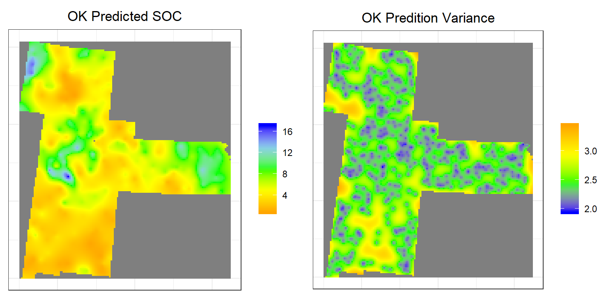
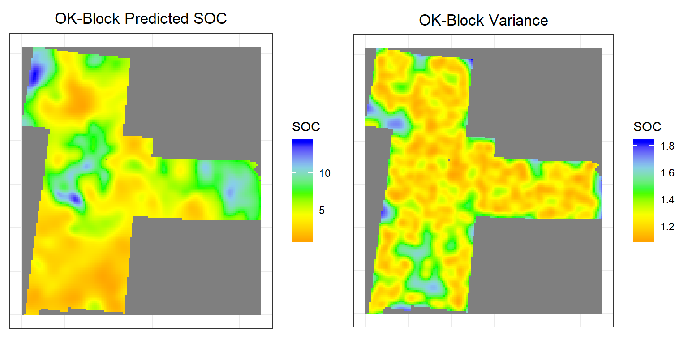

Ordinary Kriging
Ordinary kriging (OK) is the most widely used kriging method. It is a linear unbiased estimators since error mean is equal to zero. In OK, local mean is filtered from the linear estimator by forcing the kriging weights to sum to 1. The OK is usually preferred to simple kriging because it requires neither knowledge nor stationarity of mean over the entire area.

We will cover following steps in this exercise:
Before Kriging, first we have to calculate semivariogram of SOC and fitted the model. Then we apply krige()* function of gstat** package.
Load package:
library(plyr)
library(dplyr)
library(gstat)
library(raster)
library(ggplot2)
library(car)
library(classInt)
library(RStoolbox)
library(spatstat)
library(dismo)
library(fields)
library(gridExtra)Load Data
The soil organic carbon data (train and test data set) could be found here.
# Define data folder
dataFolder<-"D:\\Dropbox\\Spatial Data Analysis and Processing in R\\DATA_08\\DATA_08\\"train<-read.csv(paste0(dataFolder,"train_data.csv"), header= TRUE)
grid<-read.csv(paste0(dataFolder, "GP_prediction_grid_data.csv"), header= TRUE)Data Transformation
Power Transform uses the maximum likelihood-like approach of Box and Cox (1964) to select a transformation of a univariate or multivariate response for normality. First we have to calculate appropriate transformation parameters using powerTransform() function of car package and then use this parameter to transform the data using bcPower() function.
powerTransform(train$SOC)## Estimated transformation parameter
## train$SOC
## 0.2523339train$SOC.bc<-bcPower(train$SOC, 0.2523339)First. we have to define x & y variables to coordinates
coordinates(train) = ~x+y
coordinates(grid) = ~x+yVariogram Modeling
# Variogram
v<-variogram(SOC.bc~ 1, data = train, cloud=F)
# Intial parameter set by eye esitmation
m<-vgm(1.5,"Exp",40000,0.5)
# least square fit
m.f<-fit.variogram(v, m)
m.f## model psill range
## 1 Nug 0.5165678 0.00
## 2 Exp 1.0816886 82374.23Plot varigram and fitted model
#### Plot varigram and fitted model:
plot(v, pl=F,
model=m.f,
col="black",
cex=0.9,
lwd=0.5,
lty=1,
pch=19,
main="Variogram and Fitted Model\n Box-Cox Transformed SOC",
xlab="Distance (m)",
ylab="Semivariance")
Point or Punctual Kriging
Ordinary point kriging is one of the simplest forms of kriging. In general, point kriging estimate the value of a point from a set of nearby sample values using kriging.
krige() function in gstat package use for simple, ordinary or universal kriging (sometimes called external drift kriging), kriging in a local neighborhood, point kriging or kriging of block mean values (rectangular or irregular blocks), and conditional (Gaussian or indicator) simulation equivalents for all kriging varieties, and function for inverse distance weighted interpolation. For multivariate prediction.
OK<-krige(SOC.bc~1,
loc= train, # Data frame
newdata=grid, # Prediction grid
model = m.f) # fitted varigram model## [using ordinary kriging]summary(OK)## Object of class SpatialPointsDataFrame
## Coordinates:
## min max
## x -1245285 114715
## y 1003795 2533795
## Is projected: NA
## proj4string : [NA]
## Number of points: 10674
## Data attributes:
## var1.pred var1.var
## Min. :-0.1729 Min. :0.7212
## 1st Qu.: 1.3237 1st Qu.:0.9277
## Median : 1.8679 Median :1.0005
## Mean : 1.8915 Mean :1.0220
## 3rd Qu.: 2.4842 3rd Qu.:1.0993
## Max. : 4.1525 Max. :1.4493Back transformation
We will back transformation using transformation parameters that have used Box-cos transformation
k1<-1/0.2523339
OK$OK.pred <-((OK$var1.pred *0.2523339+1)^k1)
OK$OK.var <-((OK$var1.var *0.2523339+1)^k1)
summary(OK)## Object of class SpatialPointsDataFrame
## Coordinates:
## min max
## x -1245285 114715
## y 1003795 2533795
## Is projected: NA
## proj4string : [NA]
## Number of points: 10674
## Data attributes:
## var1.pred var1.var OK.pred OK.var
## Min. :-0.1729 Min. :0.7212 Min. : 0.838 Min. :1.940
## 1st Qu.: 1.3237 1st Qu.:0.9277 1st Qu.: 3.133 1st Qu.:2.302
## Median : 1.8679 Median :1.0005 Median : 4.620 Median :2.440
## Mean : 1.8915 Mean :1.0220 Mean : 5.188 Mean :2.492
## 3rd Qu.: 2.4842 3rd Qu.:1.0993 3rd Qu.: 6.880 3rd Qu.:2.639
## Max. : 4.1525 Max. :1.4493 Max. :17.126 Max. :3.439Convert to raster
OK.pred<-rasterFromXYZ(as.data.frame(OK)[, c("x", "y", "OK.pred")])
OK.var<-rasterFromXYZ(as.data.frame(OK)[, c("x", "y", "OK.var")])Plot predicted SOC and OK Error
p1<-ggR(OK.pred, geom_raster = TRUE) +
scale_fill_gradientn("", colours = c("orange", "yellow", "green", "sky blue","blue"))+
theme_bw()+
theme(axis.title.x=element_blank(),
axis.text.x=element_blank(),
axis.ticks.x=element_blank(),
axis.title.y=element_blank(),
axis.text.y=element_blank(),
axis.ticks.y=element_blank())+
ggtitle("OK Predicted SOC")+
theme(plot.title = element_text(hjust = 0.5))
p2<-ggR(OK.var, geom_raster = TRUE) +
scale_fill_gradientn("", colours = c("blue", "green","yellow", "orange"))+
theme_bw()+
theme(axis.title.x=element_blank(),
axis.text.x=element_blank(),
axis.ticks.x=element_blank(),
axis.title.y=element_blank(),
axis.text.y=element_blank(),
axis.ticks.y=element_blank())+
ggtitle("OK Predition Variance")+
theme(plot.title = element_text(hjust = 0.5))
grid.arrange(p1,p2, ncol = 2) # Multiplot 
Above plots show the interpolated map of soil SOC with associated error at each prediction grid. OK predicted map shows global pattern and hot spot locations of SOC concentration. The kriging variance is higher in unsampled locations, since variance depends on geometry of the sampling locations with lower variance near sampling locations. This kriging variance also depends on co variance model but independent of data values.
Block Kriging
Block Kriging is similar to the point kriging. Block kriging, which estimates averaged values over gridded “blocks” rather than single points. These blocks often have smaller prediction errors than are seen for individual points. The kriged estimate for a block centered will usually be quite similar to the kriged estimate for a on the point, however, the prediction is a block average, which smooths out local extremes and the short-range variability (within a block) is removed, so the kriging variances are lower than for point OK.
Like point kriging, We can use krige() function with one additional argument: block, which gives the dimensions of the block as a list. For the usual case of a 2D block (surface area), this is a list of two dimensions (which are usually, but not necessarily the same).
OK.block <- krige(SOC.bc ~ 1,
loc = train,
newdata = grid,
model = m.f,
block = c(50000, 50000)) # 50 km x 50 km## [using ordinary kriging]Back transormation
k1<-1/0.2523339
OK.block$SOC.pred <-((OK.block$var1.pred *0.2523339+1)^k1)
OK.block$SOC.var <-((OK.block$var1.var *0.2523339+1)^k1)Convert to raster
SOC.block.pred<-rasterFromXYZ(as.data.frame(OK.block)[, c("x", "y", "SOC.pred")])
SOC.block.var<-rasterFromXYZ(as.data.frame(OK.block)[, c("x", "y", "SOC.var")])Plot map
# Predicted values
p3<-ggR(SOC.block.pred, geom_raster = TRUE) +
scale_fill_gradientn("SOC", colours = c("orange", "yellow", "green", "sky blue","blue"))+
theme_bw()+
theme(axis.title.x=element_blank(),
axis.text.x=element_blank(),
axis.ticks.x=element_blank(),
axis.title.y=element_blank(),
axis.text.y=element_blank(),
axis.ticks.y=element_blank())+
ggtitle("OK-Block Predicted SOC")+
theme(plot.title = element_text(hjust = 0.5))
# Error
p4<-ggR(SOC.block.var, geom_raster = TRUE) +
scale_fill_gradientn("SOC", colours = c("orange", "yellow", "green", "sky blue","blue"))+
theme_bw()+
theme(axis.title.x=element_blank(),
axis.text.x=element_blank(),
axis.ticks.x=element_blank(),
axis.title.y=element_blank(),
axis.text.y=element_blank(),
axis.ticks.y=element_blank())+
ggtitle("OK-Block Variance")+
theme(plot.title = element_text(hjust = 0.5))
grid.arrange(p3,p4, ncol = 2) # Multiplot 
rm(list = ls())